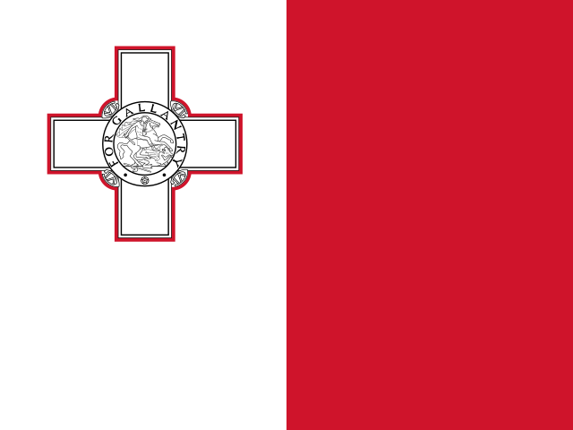
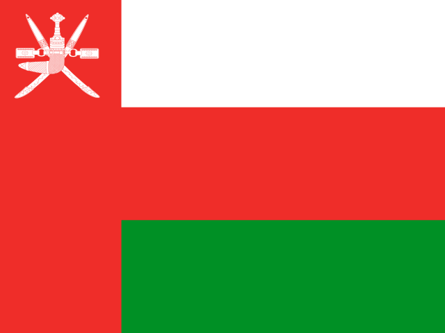

Filtrar por:
Regiões
Categorias
| 1 |
 |
Japão |
134,3% |
|
| 2 |
 |
Itália |
129% |
|
| 3 |
 |
França |
110,2% |
|
| 4 |
 |
Estados Unidos |
98,5% |
|
| 5 |
 |
Bélgica |
96,5% |
|
| 6 |
 |
Bolívia |
95,5% |
|
| 7 |
 |
Reino Unido |
95,5% |
|
| 8 |
 |
Barbados |
88,8% |
|
| 9 |
 |
Cabo Verde |
85,4% |
|
| 10 |
 |
Espanha |
82,8% |
|
| 11 |
 |
Egito |
82,3% |
|
| 12 |
 |
Portugal |
81,4% |
|
| 13 |
 |
África do Sul |
76,8% |
|
| 14 |
 |
Fiji |
76,4% |
|
| 15 |
 |
Brasil |
70,8% |
|
| 16 |
|
Namíbia |
70,3% |
|
| 17 |
 |
Quênia |
68,8% |
|
| 18 |
 |
Israel |
68,3% |
|
| 19 |
 |
Marrocos |
65,2% |
|
| 20 |
 |
Áustria |
65% |
|
| 21 |
 |
Paquistão |
64,4% |
|
| 22 |
 |
Hungria |
63% |
|
| 23 |
 |
São Cristóvão e Névis |
61% |
|
| 24 |
 |
Costa Rica |
59,3% |
|
| 25 |
 |
Trinidad e Tobago |
58,5% |
|
| 26 |
 |
Eslováquia |
58% |
|
| 27 |
 |
Uruguai |
58% |
|
| 28 |
 |
Sudão do Sul |
57,3% |
|
| 29 |
 |
México |
54,2% |
|
| 30 |
 |
Libéria |
53,8% |
|
| 31 |
 |
Colômbia |
53,6% |
|
| 32 |
 |
Polônia |
53,4% |
|
| 33 |
 |
Argélia |
52,8% |
|
| 34 |
 |
Macedônia do Norte |
52% |
|
| 35 |
 |
Romênia |
51,6% |
|
| 36 |
 |
Eslovênia |
50,6% |
|
| 37 |
 |
Alemanha |
49,4% |
|
| 38 |
|
Seicheles |
48,4% |
|
| 39 |
 |
República Dominicana |
47,1% |
|
| 40 |
 |
Croácia |
46,1% |
|
| 41 |
 |
Finlândia |
45,7% |
|
| 42 |
|
Essuatíni |
45,3% |
|
| 43 |
 |
Botsuana |
45,2% |
|
| 44 |
 |
Albânia |
44,8% |
|
| 45 |
 |
Islândia |
44% |
|
| 46 |
 |
Níger |
43,9% |
|
| 47 |
 |
Lituânia |
42,5% |
|
| 48 |
|
Panamá |
42,2% |
|
| 49 |
 |
Indonésia |
39,3% |
|
| 50 |
 |
Sérvia |
39,1% |
|
| 51 |
 |
Letônia |
38,7% |
|
| 52 |
 |
Etiópia |
38,6% |
|
| 53 |
 |
Malta |
38,2% |
|
| 54 |
 |
Camarões |
37,7% |
|
| 55 |
 |
Mali |
36,8% |
|
| 56 |
 |
Países Baixos |
36,4% |
|
| 57 |
 |
Paraguai |
35,5% |
|
| 58 |
 |
Irã |
34,3% |
|
| 59 |
|
Mauritânia |
34,2% |
|
| 60 |
 |
Nigéria |
32,2% |
|
| 61 |
 |
Austrália |
32,1% |
|
| 62 |
 |
Tchéquia |
31,8% |
|
| 63 |
 |
Djibuti |
29,6% |
|
| 64 |
 |
Guiana |
28,9% |
|
| 65 |
 |
Chile |
28,5% |
|
| 66 |
 |
Nova Zelândia |
27,9% |
|
| 67 |
 |
Guiné Equatorial |
26% |
|
| 68 |
|
Taiwan |
25,7% |
|
| 69 |
 |
Arábia Saudita |
24,2% |
|
| 70 |
 |
Peru |
22,9% |
|
| 71 |
 |
Irlanda |
22,5% |
|
| 72 |
|
Bósnia e Herzegovina |
21,9% |
|
| 73 |
 |
Chipre |
21,1% |
|
| 74 |
 |
Bulgária |
21% |
|
| 75 |
 |
Turquia |
21% |
|
| 76 |
 |
Suíça |
18,3% |
|
| 77 |
 |
Suécia |
14,9% |
|
| 78 |
 |
Estônia |
14,4% |
|
| 79 |
 |
Canadá |
10,3% |
|
| 80 |
 |
Coreia do Sul |
10,3% |
|
| 81 |
 |
Cazaquistão |
6% |
|
| 82 |
|
Lesoto |
2,6% |
|
| 83 |
 |
Luxemburgo |
-1,6% |
|
| 84 |
 |
Omã |
-3,6% |
|
| 85 |
 |
Dinamarca |
-5,9% |
|
| 86 |
 |
Noruega |
-163,5% |
|